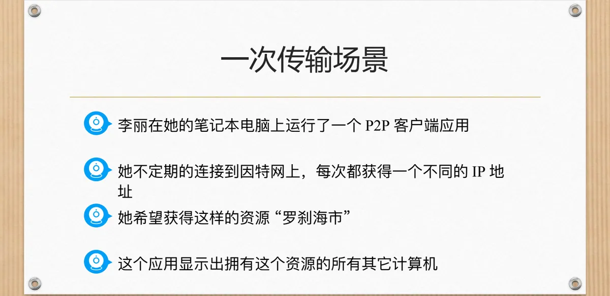
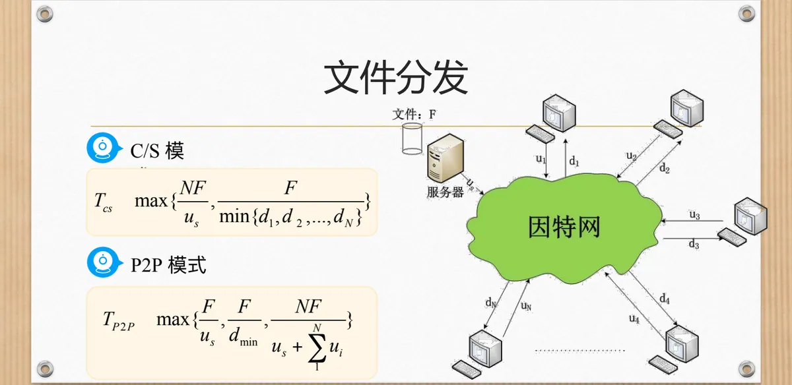
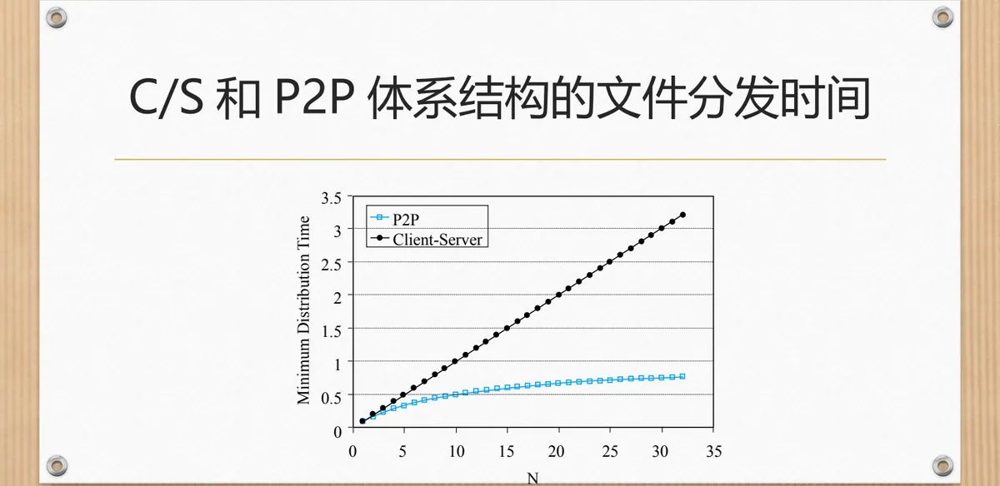

计算机通信与网络 · 第二版讲义 · 第 3 章 网络服务及应用
3.8 P2P文件分发
万维网、文件传送都以一台服务器为中心：客户机来取，服务器来给。P2P 抹掉了这条界线——参与分发的计算机在下载的同时也替别人上传。本节先跟李丽走完一次传输，再比较 C/S 与 P2P 两种分发模式，最后看最小分发时间随对等方数量 N 的变化。
1. 一次传输场景：既是客户机，又是服务器
李丽在她的笔记本电脑上运行了一个 P2P 客户端应用。她不定期的连接到因特网上，每次都获得一个不同的 IP 地址。这一次她希望获得资源「罗刹海市」，应用界面上随即显示出拥有这个资源的所有其它计算机。

李丽从中选择了张三，这个资源就从张三的 PC 拷贝到了李丽的笔记本电脑上。与此同时，其它用户也在向李丽的机器上传其它资源。所以她的计算机既是一个客户机，也是一个服务器；只要客户端开着，就自然贡献出一份上传能力。
放大到整个系统，结论是：所有的计算机都是服务器。每加入一台机器，带来的不只是对资源的一份需求，还有一份可供别人使用的上传能力；参与者越多，系统能提供的服务反而越充足，这就是 P2P 的高可扩展性。3.1 节说 P2P 体系架构「非常容易扩展，但也特别难管理」，原因也在这里——李丽与张三之间没有中心设备，双方随时可以上下线，地址也可能变化。
2. 两种文件分发模式：C/S 与 P2P
把一份文件分发给许多人，有两种组织方式。C/S 模式（客户机/服务器模式）把文件集中在一台或一组服务器上，客户机都到服务器去取；服务器是唯一的内容来源，每一份对外拷贝都要它付出带宽与处理能力的代价。P2P 模式则让已拿到文件的计算机把文件再传给后来者，请求与提供在同一台机器上同时发生。

参与者不多时两种模式差别不大，参与者一多差距就迅速拉开。第一版讲义 6.2 客户—服务器方式和对等方式对这两种工作方式有更一般的讨论。
3. 最小分发时间随 N 怎样变化
比较两种模式需要一把尺子：把一份文件分发给全部 N 个对等方所需的最短时间，称为最小分发时间（Minimum Distribution Time）。课件的坐标图以 N 为横轴（刻度 0 到 35），以最小分发时间为纵轴（刻度 0 到 3.5），画出 Client-Server 与 P2P 两条曲线。

Client-Server 曲线随 N 增大而持续上升：所有对等方都从同一台服务器取数据，服务器出口带宽被越来越多的下载者分摊，N 越大，每份拷贝分到的带宽越少。P2P 曲线上升得慢得多，明显低于前者，并在 N 较大时趋于平缓：每加入一个对等方，它既是一个新的下载者，也是一份新的上传能力，系统总上行带宽随 N 一起增长。参与的人越多，P2P 相对 C/S 的优势越大——这与「所有的计算机都是服务器 = 高可扩展性」是同一件事的两种说法。
本节小结
- P2P 文件分发中，参与者在下载的同时也上传：李丽从张三的 PC 上取到资源「罗刹海市」，同时又在向别人上传其它资源，故她的计算机既是客户机，也是服务器；
- 所有的计算机都是服务器，参与分发的机器越多，系统整体的服务能力越强，这就是 P2P 的高可扩展性；代价是结点随时上下线、地址可能变化，比中心化服务难管理；
- C/S 模式由一台或一组服务器承担全部对外拷贝，P2P 模式让先拿到文件的计算机再传给后来者，两者对服务器带宽的依赖完全不同；
- 比较的尺子是最小分发时间。课件曲线显示：Client-Server 的分发时间随 N 持续上升，P2P 上升更慢且始终更低、在 N 较大时趋于平缓，可见对等方越多，P2P 的优势越明显。